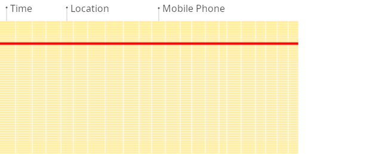

ClickHouse Meetup in Berlin
ClickHouse Meetup in Berlin
ClickHouse: Past, Present and Future
What is ClickHouse?
ClickHouse — distributed analytical column-oriented DBMS
Why column-oriented?
Why column-oriented?
Here is how "traditional" row-oriented system work:

Why column-oriented?
Here is how column-oriented systems work:

Not a new idea...
Examples:
— column-oriented DBMSs from Germany.
Why ClickHouse?
1. Efficiency;
2. Flexibility;
3. Scalability;
4. Cost.
Nothing was suitable. Then we developed ClickHouse.
Yandex Metrica 2.0

Timeline
2010 — start of development
2012 — first production usages
2015 — launch of Metrica 2
2016 — open-source
ClickHouse in Yandex
In Yandex, ClickHouse has proven to be easy of use.
For example, we have detailed documentation from the beginning.
In 2012..2016, ClickHouse gained a widespread inside Yandex:
Mail, Comparison Shopping, Ads, Webmaster Tools, Infrastructure, Business Analytics...
Yandex analysts installed ClickHouse on their own VMs without any assistance.
ClickHouse, brief description
- column-oriented
- linearly scalable
- fault-tolerant (incl. cross DC)
- realtime data ingestion
- realtime (sub-second) queries
- support of SQL dialect + extensions
(arrays, nested data structures, domain-specific functions, sampling)
The main cluster of Yandex.Metrica
- >25 trillion of rows
- 500 servers
- Up to 2 TB per second query execution speed across the cluster
* If you want to try ClickHouse, single server will be enough.
Open-source (since June 2016)
We think ClickHouse is too good to be used solely by Yandex.
We made it open-source. License: Apache 2.0.
https://github.com/ClickHouse/ClickHouse/
When to use ClickHouse
For well structured, clean, immutable events.
Click stream. Web analytics. Adv. networks. RTB. E-commerce.
Analytics for online games. Sensor and monitoring data. Telecom data.
When not to use ClickHouse
OLTP
ClickHouse doesn't have UPDATE statement and full-featured transactions.
Key-Value
If you want high load of small single-row queries, please use another system.
Blob-store, document oriented
ClickHouse is intended for vast amount of fine-grained data.
Over-normalized data
Better to make up single wide fact table with pre-joined dimensions.
Open-source
More than 100 companies are already using ClickHouse.
Examples: Cloudflare, Vertamedia, Mail.ru, Carto, Lifestreet...

How do we analyze over O(100B) DNS requests daily.
"ClickHouse enables us and our customers to explore the the dataset in real time to get operational insights. Due to many of the optimizations built into ClickHouse we are able to store the data for a long time allowing us to look events is perspective and at historical trends."
Unusual applications of ClickHouse
Bioinformatics — evolutionary genetics:
https://github.com/msestak/FindOrigin
"We are exploring evolution of novel genes in genomes because if seems that genomes are far from being static as previously believed and what actually happens is that new genes are constantly being added and old genes are lost."
Search engine and analytics for Bitcoin transactions:
https://blockchair.com/
"We have quite large tables on just single server and everything works really fast — with any filters and sorting everything is processed just instantly."
Distributed DDL queries
Example:
CREATE TABLE table ON CLUSTER cluster ...
Improvements in SQL compatibility
Limited support for table aliases and qualified identifiers.
SELECT t.column FROM table AS t
Support for aliases of functions and data types.
SELECT CAST(123 AS INT)
Allow both `MySQL` style and "ANSI" style quotes for identifiers.
SQL style escaping in string literals.
Type conversions in INSERT SELECT
Improvements of distributed queries
Automatic failover for lagged replicas:
SET max_replica_delay_for_distributed_queries = 300,
fallback_to_stale_replicas_for_distributed_queries = 1;
Failover for replicas where table doesn't exist.
Manually disable replica from leader election:
Example: conf.d/disable_leadership.xml:
<yandex><merge_tree><replicated_can_become_leader>0<replicated_can_become_leader></merge_tree></yandex>
Synchronous INSERTs into Distributed tables:
SET insert_distributed_sync = 1;
Improvements in maintenance
Allow to load parts of configuration from ZooKeeper:
<remote_servers from_zk="/path/to/node" />
Isolation of users in ZooKeeper (chroot, authentication, ACL).
SYSTEM queries:
SYSTEM RELOAD DICTIONARY 'my_dict';
Portable clickhouse binary:
milovidov@milovidov-xenial:~$ scp ./clickhouse milovidov-centos:~
Improvements in dictionaries
Dictionary database and tables
CREATE DATABASE dictionaries ENGINE = Dictionary
Invalidate query for dictionaries
<invalidate_query>
SELECT update_time FROM dictionary_source where id = 1
</invalidate_query>
ip_trie type of dictionary (contributed by CloudFlare)
MySQL dictionary over socket;
over SSL connection (contributed by Mail.ru)
Geospatial functions
pointInPolygon
... WHERE pointInPolygon((lat, lon),
[(x1, y1), (x2, y2), (x3, y3)...])
pointInEllipses
greatCircleDistance
Array and string functions
substring with dynamic and negative arguments
concat for arrays, arraySlice
arrayPushBack, arrayPushFront, arrayPopBack, arrayPopFront
arrayStringConcat
Features for data manipulation
ALTER table CLEAR COLUMN IN PARTITION
— clear old data for specific column;
OPTIMIZE TABLE ... PARTITION ... DEDUPLICATE
— cleanup accidentially duplicated data
Limited support for ALTER of primary key columns:
Enum, Date <-> UInt16, DateTime <-> UInt32
Interfaces
Sessions in HTTP interface
curl 'http://host:port/?session_id=123&session_timeout=60' \
-d 'CREATE TEMPORARY TABLE t'
Allow to send progress info in HTTP interface
...&send_progress_in_http_headers=1
Support for HTTPS in clickhouse-server
On the way: Support for SSL in native protocol
Misc
WITH ... SELECT
Type conversions for Merge tables
Allow to skip errors in INSERT data: input_format_allow_errors_*
Community contributions
- dictionary for ranges of IP-addresses (CloudFlare)
- infer index use with pk subexpression (CloudFlare)
- sumMap aggregate function (CloudFlare)
- topK aggregate function (CloudFlare)
- fix for shuffle in choosing ZK server (CloudFlare)
- fix of UNION ALL (Unknown Chinese Company)
- SSL for MySQL dictionaries (Mail.ru)
- UUID data type and functions (Guillaume Tassery)
- functions for MAC addresses (Dmitry Luhtionov)
- findClusterIndex, findClusterValue (mfridental)
- ForEach combinator for aggregate functions (mfridental)
- 'none' compression method (Sematext Group, Inc.)
- update zstd (SAKURA Internet Inc.)
Custom partition keys
Almost ready :)
Nov .. Dec 2017
UPDATE/DELETE
In design stage.
Q1/Q2 2018
Q1/Q2 2018
JOINs rectification
Resource pools (CPU, disk IO, network bandwidth)
How to connect to ClickHouse
HTTP REST
clickhouse-client
JDBC, ODBC
Python, PHP, Perl, Go,
Node.js, Ruby, C++, .NET, Scala, R, Julia, Rust
Integrations with data visualization tools
Tabix (tabix.io) — specifically developed for ClickHouse.
 And also:
And also:
Grafana, Redash, Apache Zeppelin,
Superset… Tableau